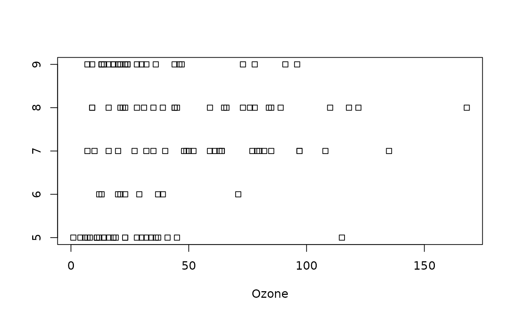

create a dotplot using stripchart
dotplot.RdA method for creating dotplots. The functions call the stripchart command from the graphics package and assign the output to have the class dotplot.
Arguments
- x
a vector or formula, where the right hand side of the formula is a factor.
- ...
other graphical parameters including those passed to
title.
Details
This function was created as a result of being unable to assign all graphical parameters that are created when a formula is used in stripchart. Users not intending to use the VI method should use stripchart instead.
See also
This function is dependent on the stripchart function from the graphics package. Consult its help page for more information.
Value
An object of class dotplot. This class is just a placeholder for the contents of the object used to create a boxplot which would otherwise not be stored in a usable format. The class is not intended for the user; it is a tool that enables the BrailleR package to deliver a readable text version of the plot.
Examples
VI(with(airquality, dotplot(Ozone~Month)))
#> Warning: The dotplot command is a wrapper for stripchart,and is not a base R function.

#> This graph has 5 dotplots printed horizontally
#> With no title
#> "" appears on the x-axis.
#> "" appears on the y-axis.
#> Tick marks for the x-axis are at: 0, 50, 100, and 150
#> the data that range from 1 to 168 has been broken into 6 bins.
#> The counts are:
#> 5: 18 7 0 0 1 0
#> 6: 5 3 1 0 0 0
#> 7: 5 7 9 4 1 0
#> 8: 7 6 7 3 2 1
#> 9: 19 6 2 2 0 0